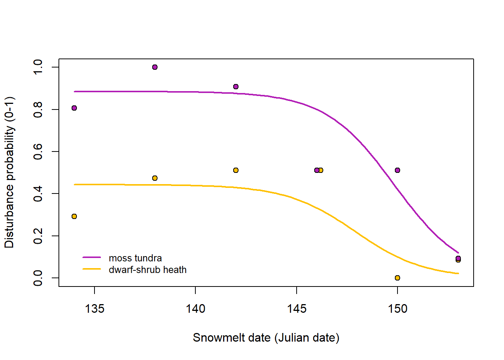

1 Disturbance prediction
- using the disturbance assessments from the field
1.1 Load files and clean
# Load the disturbance field data
plots<- read.csv("datafiles/goose_grubbing_small_veg_goose.csv", sep=";")
# Load the spatial file for field plots
plot_sf<-read_sf("datafiles/grubbing_small_plot.shp")
# Calculate the centroid of the plots
plot_sf$centroid <- st_centroid(plot_sf$geometry)
# Extract central coordinates of small plots
plot_sf <- plot_sf %>%
mutate(x = map_dbl(geometry, ~st_centroid(.x)[[1]]),
y = map_dbl(geometry, ~st_centroid(.x)[[2]]))
# Create dataframe with xy coordinates as columns
coordinates <- plot_sf %>% st_drop_geometry() %>% dplyr::select(sub_plot=Name,x,y)
# Clean the dataset, group classes and add presence absence columns
df <-dplyr::select(plots, sub_plot, group_of_plots, date_snow_free, veg =field_class_vier, bull_pa, pick_pa, date_disturbance) %>%
filter(!(veg == 'na')) %>%
filter(!(date_snow_free == 'late')) %>%
mutate(disturbance = ifelse((bull_pa < 1) & (pick_pa < 1), 0, 1)) %>%
inner_join(coordinates) %>%
mutate(veg_class = recode(veg, 'wet' = 'moist'))
df$veg_class<-gsub('hmo', 'dry',df$veg_class)
df$pick_pa<-df$disturbance-df$bull_pa
# Add new column that translates snowfree date into snow-free days
df$snow<-df$date_snow_free
df$snow[df$snow == "153"]<-2
df$snow[df$snow == "150"]<-6
df$snow[df$snow == "146"]<-10
df$snow[df$snow == "142"]<-14
df$snow[df$snow == "138"]<-18
df$snow[df$snow == "134"]<-22
# Change to factor and numeric where necessary
df$veg_class<- as.factor(df$veg_class)
df$snow<- as.numeric(df$snow)1.2 Modelling disturbance probability
# Select data for disturbance model (snow-free date)
d <- dplyr::select(df, veg_class, snow=date_snow_free, disturbance)
d$snow<-as.numeric(d$snow)
d$expsnow <- exp(d$snow)
levels(d$veg_class) <- c("dwarf shrub heath", "moss tundra")
# Disturbance model with different slope for both vegetation classes
mossheath.drm32 <- drm(disturbance ~ expsnow, veg_class, data = d,
fct = LL2.3(), type = "binomial", pmodels = data.frame(veg_class, veg_class, veg_class))
mossheath.drm32
summary(mossheath.drm32)
# Predict the model to 100 points for plotting
pred.newdata<-cbind.data.frame(snow=seq(134,153,length=100),expsnow=exp(seq(134,153,length=100)),
veg_class=rep(c("dwarf shrub heath", "moss tundra"),each=100))
pred.newdata$pred.dm<-predict(mossheath.drm32,newdata=pred.newdata)
plot(pred.dm~snow, data=pred.newdata,subset=veg_class=="dwarf shrub heath",
type="l",col="red", ylim=c(0,1),ylab="Prop grubbing")
lines(pred.dm~snow, data=pred.newdata,subset=veg_class=="moss tundra",col="blue")# Disturbance model with same slope for both vegetation classes
pred.newdata<-cbind.data.frame(snow=seq(134,153,length=100),expsnow=exp(seq(134,153,length=100)),
veg_class=rep(c("dwarf shrub heath", "moss tundra"),each=100))
mossheath.drm32.b <- drm(disturbance ~ expsnow, veg_class, data = d,
fct = LL2.3(), type = "binomial", pmodels = data.frame(1, veg_class, veg_class))
summary(mossheath.drm32.b)
pred.newdata$pred.dm.b<-predict(mossheath.drm32.b,newdata=pred.newdata)1.3 Calculate means and plot the predictions
# Calculate the mean disturbance per vegetation class and snowfree date
mean_veg_snow<-group_by(d, snow, veg_class) %>%
summarize_at(vars(disturbance),
list(~length(.),
~mean(., na.rm = T)))
# Move one point minimally so that they are both visible and don't overlap
mean_veg_snow[7,1] = 146.2
# Plot the disturbance model
pdf("Figures/grubbing_model_drc.pdf", # File name
width = 5, height = 5, # Width and height in inches
bg = "white")
plot(range(mean_veg_snow[,1]), range(c(0,1)), type='n', ylab="Disturbance probability (0-1)", xlab="Snowmelt date (Julian date)")
lines(pred.dm.b~snow, lwd = 2, data=pred.newdata,subset=veg_class=="moss tundra",col="#B21EB6")
lines(pred.dm.b~snow, lwd = 2, data=pred.newdata,subset=veg_class=="dwarf shrub heath",col="#FFC000")
par(new=TRUE)
plot(mean_veg_snow$snow, mean_veg_snow$mean, axes=FALSE, ylab="", xlab="", col="black", bg=c('#FFC000', '#B21EB6')[as.numeric(mean_veg_snow$veg_class)], pch=21)
legend(134, 0.15, legend=c("moss tundra", "dwarf-shrub heath"), col=c("#B21EB6", "#FFC000"),
lty=1, lwd = 2, cex=0.8, box.lty=0)
dev.off()
1.4 Run model for use in next scripts
Running the same model with vegetation classes as with factor names 1 or 2 instead of class names to use in the disturbance maps (disturbance_map_satellite, disturbance_map_drone). You can avoid this step by running the model with numeric factors from the beginning and then relabel for plotting instead…
d_map <- dplyr::select(df, veg_class, snow=date_snow_free, disturbance)
d_map$snow<-as.numeric(d_map$snow)
d_map$expsnow <- exp(d_map$snow)
levels(d_map$veg_class) <- c(2,1)
map.drm32 <- drm(disturbance ~ expsnow, veg_class, data = d_map,
fct = LL2.3(), type = "binomial", pmodels = data.frame(1, veg_class, veg_class))